Las guerras mas importantes
Revolucion Francesa (1789-1799)
La Revolución francesa fue un conflicto social y político, con diversos periodos de violencia, que convulsionó Francia y, por extensión de sus implicaciones, a otras naciones de Europa que enfrentaban a partidarios y opositores del sistema conocido como el Antiguo Régimen. Se inició con la autoproclamación del Tercer Estado como Asamblea Nacional en 1789 y finalizó con el golpe de estado de Napoleón Bonaparte en 1799.
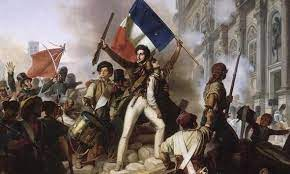
Guerra de las Galias (58 a.c.-51 a.c.)
La Guerra de las Galias fue un conflicto militar librado entre el procónsul romano Julio César y las tribus galas entre el año 58 a. C. y 51 a. C. En el curso de las mismas la República romana sometió a la Galia, extenso país que llegaba desde el Mediterráneo hasta el Canal de la Mancha. Los romanos también realizaron incursiones a Britania y Germania, pero estas expediciones no llegaron a transformarse en invasiones a gran escala. La Guerra de las Galias culminó con la Batalla de Alesia en 52 a. C., donde los romanos pusieron fin a la resistencia organizada de los galos. Esta decisiva victoria romana supuso la expansión de la República romana sobre todo el territorio galo. Las tropas empleadas durante esta campaña, conformaron el ejército con el que el general marchó sobre la capital de la República.
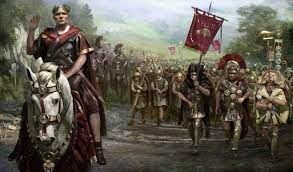
La guerra de los 100 años (1337-1453)
La Guerra de los Cien Años (Guerre de Cent Ans en francés, Hundred Years' War en inglés) fue un prolongado conflicto armado que duró en realidad 116 años (1337-1453) entre los reyes de Francia y los de Inglaterra. Esta guerra fue de raíz feudal, pues su propósito no era otro que dirimir quién controlaría las enormes posesiones de los monarcas ingleses en territorios franceses desde 1154, debido al ascenso al trono inglés de Enrique II Plantagenet, conde de Anjou y casado con Leonor de Aquitania. Tuvo implicaciones internacionales. Finalmente y después de innúmeros avatares, se saldó con la retirada inglesa de tierras francesas.
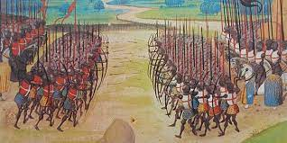
Las cruzadas (1095-1291)
Las Cruzadas fueron una serie de campañas militares organizadas por los papas y las potencias cristianas occidentales para retomar Jerusalén y la Tierra Santa del control musulmán y después defender esas conquistas. Hubo ocho grandes cruzadas oficiales entre 1095 y 1270 y muchas más no oficiales, ninguna sería tan exitosa como la primera, y para el año 1291 los Estados Cruzados creados en el Medio Oriente fueron absorbidos en el Sultanato mameluco. La idea de las cruzadas fue aplicada más exitosamente (para los cristianos) en otras regiones, notablemente en el Báltico contra los paganos europeos y en la península ibérica contra los moros musulmanes. Involucrando emperadores, reyes y la nobleza europea, así como a miles de caballeros y guerreros más humildes, las guerras tendrían consecuencias tremendas para todos los involucrados. Los efectos, aparte de las obvias muertes, vidas arruinadas, recursos destruidos y gastados, variaron desde el colapso del Imperio bizantino a un agriamiento de las relaciones e intolerancia entre las religiones y personas en el Este y Oeste que aún afecta a gobiernos y sociedades hoy en día.
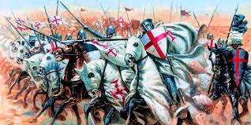
La primera cruzada (1095-1102)
La Primera Cruzada (1095-1102) estableció un precedente para la confusa mezcla de política, religión y violencia que condujeron todas las campañas futuras. El emperador bizantino Alejo I Comneno (r. 1081 - 1118) vio una oportunidad en obtener ayuda militar occidental para derrotar a los selyúcidas musulmanes que estaban comiéndose su imperio en Asia Menor. Cuando los selyúcidas tomaron Jerusalén (de sus compañeros musulmanes, no los cristianos que habían perdido la ciudad siglos antes) en el año 1087, provocó el catalizador para movilizar a los cristianos occidentales en acción. El papa Urbano II (r. 1088 - 1099) respondió a esta llamada de ayuda, motivado por el deseo de fortalecer el papado y aprovechar el prestigio de convertirse en la cabeza indiscutida de toda la Iglesia cristiana, incluida la ortodoxa del Este. Retomando Jerusalén y sitios como el Santo Sepulcro, considerada la tumba de Jesucristo, después de siglos de control musulmán sería un golpe real. Consecuentemente, el Papa puso en marcha una campaña de predicación a través de Europa, que apelaba a los nobles y caballeros occidentales a afilar sus espadas, alistarse e irse a la Tierra Sienta a defender los sitios más preciados de la cristiandad y cualquier cristiano en peligro ahí.
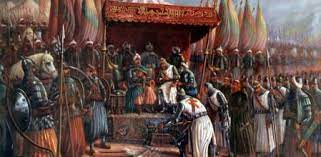
La segunda cruzada (1144)
En el año 1144 la ciudad de Edesa en Mesopotamia Superior fue capturada por el líder selyúcida musulmán Imad ad-Din Zangi (r. 1127 - 1146), el gobernante independiente de Mosul (en Irak) y Alepo (en Siria), y muchos cristianos fueron asesinados o esclavizados. Esto encendería una nueva cruzada para tomarla nuevamente. El rey germano Conrado III (r. 1138 - 1152) y Luis VII, el rey de Francia (r. 1137 - 1180), dirigieron la Segunda Cruzada de 1147 - 1149, pero este sello real de aprobación no trajo éxito. La muerte de Zangi solo trajo a un más determinado personaje a la escena, su sucesor Nur ad-Din (algunas veces llamado Nur al-Din, r. 1146 - 1174), quien buscaba unir al mundo musulmán en una guerra santa contra los cristianos del Levante. Dos grandes derrotas a menos de los selyúcidas en los años 1147 y 1148 golpeó el relleno del ejército cruzado, y su desesperado intento de salvar algo honorable de la campaña, el asedio a Damasco en junio del año 1148, fue otro miserable fracaso. El siguiente año Nur ad-Din capturó Antioquía, y el Condado de Edesa dejó de existir para el año 1150.
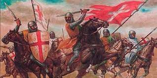
La tercera cruzada (1147)
De regreso en el Medio Oriente, el destino de los tres Estados Cruzados restantes se estaba convirtiendo cada vez más precaria. La nueva estrella musulmana, Saladino, el sultán de Egipto y Siria (r. 1174 - 1193) ganó una gran victoria contra el ejército del Este Latino en la batalla de Hattin en el año 1187, e inmediatamente después tomó Jerusalén. Estos eventos traerían la Tercera Cruzada (1189 - 1192). Tal vez la más glamorosa de todas las campañas, esta vez había dos reyes occidentales y un emperador al mando, por ello el nombre de 'la Cruzada de los Reyes'. Los tres grandes nombres fueron: Federico I Barbarroja, rey de Alemania y emperador del Sacro Imperio Romano (r. 1152 - 1190), Felipe II de Francia (r. 1180 - 1223) y Ricardo I "Corazón de León" de Inglaterra (r. 1189 - 1199). A pesar del pedigrí real, las cosas empezaron de la peor manera para los cruzados cuando Federico se ahogó en un río en su trayecto hacia la Tierra Santa en junio de 1190. La presencia de Ricardo finalmente terminó el asedio de Acre a favor de los cristianos en julio de 1191, después de que el rey inglés había causado ya un revuelo al capturar Chipre en el camino. Marchando hacia Jaffa, el ejército cristiano anotó otra victoria en la batalla de Arsuf en septiembre de 1191, pero al tiempo que las fuerzas llegaron a Jerusalén, sintieron que no podrían tomar la ciudad, e incluso si lo lograban, el ejército, relativamente intacto, de Saladino podría tomarla de vuelta inmediatamente. El resultado final de la Tercera Cruzada fue un mero premio de consolación: un tratado que permitía a los peregrinos cristianos viajar a la Tierra Santa sin molestias y una franja de tierra alrededor de Acre. Aun así, era un soporte vital y uno que inspiró muchas cruzadas futuras a expandirlo a algo mejor.
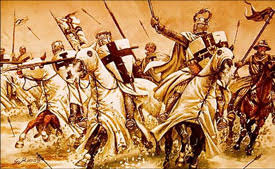
La guerra Anti-Fengtian
La guerra anti-Fengtian (chino: 反 奉 战争, pinyin: Fan Feng Zhan Zheng) fue la última gran guerra civil del periodo de la Época de los caudillos militares en China a comienzos del siglo XX antes de la Expedición al Norte. Duró desde noviembre de 1925 a abril de 1926 y enfrentó al Guominjun de Feng Yuxiang contra la camarilla de Fengtian y sus aliados de la camarilla de Zhili. La guerra terminó con la derrota del Guominjun y el fin del gobierno ejecutivo provisional. Se la conoce también por Guerra Guominjun-Fengtian (chino: 国 奉 战争, pinyin: Feng Guo Zhan Zheng) o Tercera Guerra Zhili-Fengtian (chino: 第三 次 直 奉 战争, pinyin: Di Ci San Feng Zhi Zhan Zheng).
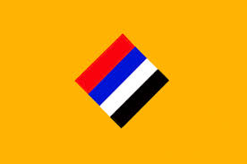
Intervencion aliada en la guerra civil rusa (1917-1923)
El gobierno soviético proponía una paz sin anexión y sin compensación/reparación. Y agregaba la puesta en práctica del derecho de autodeterminación de los pueblos. Se trataba de la aplicación de unos principios totalmente innovadores o revolucionarios en las relaciones entre estados. Se comprobó que esta política del gobierno soviético contrarió e influyó, al mismo tiempo, a la del presidente Woodrow Wilson, [1] quien había hecho del derecho de autodeterminación de los pueblos un elemento central de la política exterior de los Estados Unidos. [2] Las motivaciones de los bolcheviques y los del gobierno de Estados Unidos eran ciertamente diferentes. Los Estados Unidos, que no tenían ningún dominio colonial importante, tenían muchísimo interés en debilitar los imperios británico y alemán, las potencias coloniales belgas, francesas, holandesas… con el fin de ocupar su lugar mediante otros métodos. El mejor argumento diplomático y humanitario era el derecho a la autodeterminación de los pueblos africanos, caribeños, asiáticos que todavía estaban sometidos al yugo colonial. Para los bolcheviques, se trataba de poner fin al Imperio zarista que denunciaban como una prisión para los pueblos.
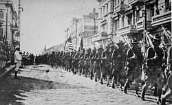
Guerras de unificacion Chinas (230-221 a.c.)
Las Guerras de Unificación de Qin de 230-221 a. C. fueron el resultado directo de los esfuerzos del rey Ying Zheng de Qin (más tarde emperador como Qin Shi Huang) para controlar todo el norte de China. Nacido como Ying Zheng en Handan en 259 a. C., Qin Shi Huang (Ch'in Shih-hung) era nominalmente el hijo del rey de Qin, pero en realidad puede haber sido descendiente del poderoso canciller de su padre, Lü Buwei. Independientemente de su patrimonio, Ying Zheng accedió al trono a los 13 años en 245 tras la muerte de su padre y asumió su gobierno personal a los 22 años en 231 cuando tomó todo el poder y destituyó a Lü Buwei, que había estado actuando como regente. Como gobernante, Ying Zheng sofocó una serie de rebeliones. También reforzó el ejército, destacando la caballería, y llevó a cabo una serie de reformas, especialmente en la agricultura. El rey estaba decidido a expandir el territorio de Qin. La mayoría de los estados más pequeños del norte y centro de China, como los estados de Ba, Shu, Zhongshan, Lu y Song, ya habían sido absorbidos por sus vecinos más poderosos, y cuando Ying Zheng llegó al trono había siete. principales estados del norte de China: Qin, Han, Zhao, Wei, Chu, Yan y Qi. Habiendo consolidado su propio reino, Ying Zheng ahora procedió a conquistar los otros estados feudales restantes del río Amarillo y los valles del río Yangtze inferior y medio en una serie de campañas del 230 al 221 a. Su estrategia era atacar y derrotar a un estado a la vez, descrito en una de las llamadas Treinta y Seis Estratagemas como "hacerse amigo de un estado distante mientras ataca a un vecino". Esto significó primero aliar a Qin con los estados de Yan y Qi y mantener a raya a los estados de Wei y Chu mientras se conquistaban los estados de Han y Zhao.
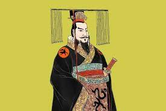
Batalla de las Termopilas
Jerjes había decidido conquistar y someter Grecia para vengar la vergonzosa derrota sufrida por su padre, Darío I, ante los atenienses en la batalla de Maratón librada diez años antes, en 490 a.C. Con este fin reunió un ejército inmenso, cuyos efectivos debían de oscilar entre 90.000 y 300.000 hombres. También remitió embajadores a las principales ciudades griegas, con un único mensaje: «Tierra y agua». La entrega de agua y tierra al Gran Rey suponía someterse a su poder, y algunos griegos lo hicieron. Pero no todos quisieron olvidar su libertad, y hubo quienes decidieron resistir hasta la victoria o el desastre.Reunidas todas las naciones de Asia en su ejército, Jerjes comandó sus tropas hasta Grecia. Mientras, oscuros presagios –un eclipse, una tempestad o el imposible parto de una mula– anunciaban desgracias y muchos pensaron que el Gran Rey había insultado a los dioses al lanzar la invasión. Ajeno a ello, el monarca condujo sus tropas hasta el norte de Grecia donde un angosto sendero discurría entre las montañas y el mar. El desfiladero que separaba a Jerjes de Grecia recibía el nombre de Termópilas, «Puertas Calientes», a causa de las aguas termales que brotaban en sus inmediaciones. Era el lugar donde, según el mito, había muerto el legendario Heracles y se lo consideraba la entrada a Grecia. Corría el mes de agosto del año 480 a.C.
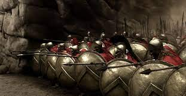
Invasion Mongol
Nacido con el nombre de Temujin en 1162, Genghis Khan creó con sangre uno de los imperios más deslumbrantes de la historia de la humanidad. Hijo del jefe de una tribu mongol, unió bajo su yugo a los guerreros nómadas de Mongolia. En 1186 se convirtió en el Khan de los mongoles. En el espacio de treinta años, conquistó los territorios de Asia Central y Europa del Este, sembrando el terror en su camino. Este líder supremo tenía toda la intención de agregar a China a sus conquistas. Esta China que había rechazado con tanto orgullo a las tribus nómadas detrás de su muro. Los mongoles atacaron a China en varios frentes a partir de 1209. Después de siglos de intentos, este pueblo nómada finalmente cruzó el muro e invadió China. La violencia y la desolación que los guerreros esparcen a su paso parecen hacer que China pague sus siglos de resistencia. Sin embargo, a los mongoles les llevará varias décadas someter este inmenso territorio. En 1277, la conquista finalmente terminó con la captura de Cantón en el sur de China. , mucho después de la muerte de Genghis Khan en 1227.
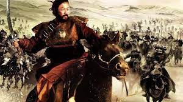